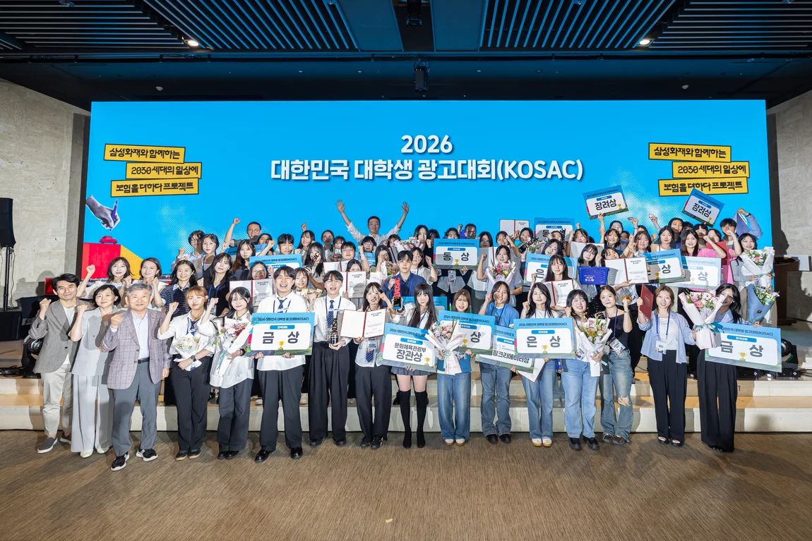
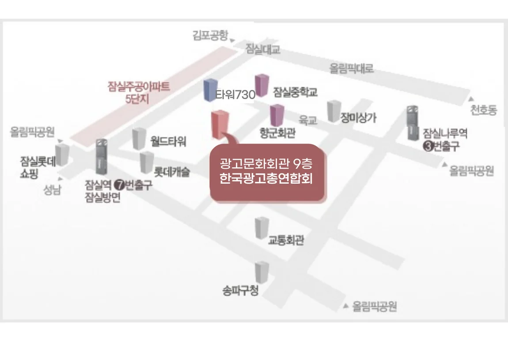

국내 광고계 최대의
산학연계 프로그램
정부·업계·학계가 함께 추진하며 국내 광고 관련 인사가 대거 참여합니다.
Korea Student Advertising
Competition
대한민국 대학생 광고대회(KOSAC)는 광고산업 활성화와 예비 광고인들의 실무능력 향상을 목표로 마련된 국내 대표 산학연계 프로그램입니다.
문화체육관광부의 지원과 광고업계 및 학계의 후원으로 개최되며, 참가자들이 조사·기획·제작·프레젠테이션에 이르는 광고 캠페인 전 과정을 경험할 수 있도록 운영됩니다.

단순한 아이디어 공모가 아니라, 실제 광고 실무에 가까운 과정을 경험하도록 설계된 산학연계 프로그램입니다.
정부·업계·학계가 함께 추진하며 국내 광고 관련 인사가 대거 참여합니다.
인턴십 연계 등 수상자의 광고업계 진출을 위한 실질적인 연계 기회를 확대합니다.
교수의 지도 아래 한 학기 동안 진행되며 전국 광고 관련 학과가 수업과 연계하여 참여합니다.
예비 광고인의 공개 경쟁의 장이자 현장 교육과 축제가 함께 이루어지는 자리입니다.
수상팀 멘토링을 통해 출품작에 대한 피드백을 받고 업계 네트워크를 구축할 수 있습니다.
조사·기획·제작·PT에 이르는 광고 캠페인의 전체 과정을 대상으로 합니다.
광고산업의 지속적인 발전은 실력 있는 인재를 통해 이루어지며, 이는 업계와 학계, 정부가 함께 노력함으로써 만들어질 수 있습니다. 한국광고총연합회는 문화체육관광부의 지원과 광고업계·학계의 후원으로 예비 광고인을 위한 산학연계 프로그램을 운영하고 있습니다.
교수의 지도 아래 실질적인 캠페인 전 과정에 참여하고 공개 경쟁을 통해 실무 경험을 쌓는 기회를 학생들에게 제공하고자 대회를 운영합니다.
KOSAC을 통해 예비 광고인에게는 광고업계로 진출할 수 있는 기회를, 업계에는 전국의 수많은 예비 광고인 가운데 검증된 인재를 발굴할 수 있는 기회를 제공하고자 합니다.
아래 내용은 2026 대회 기준입니다. 2027 대회 세부 내용은 확정 후 홈페이지를 통해 안내할 수 있습니다.
※ 일정 및 세부 내용은 사정에 따라 변경될 수 있으며, 변경 시 홈페이지를 통해 안내됩니다.
KOSAC은 집행위원회와 광고업계 심사위원회를 운영해 대회 진행과 심사의 공정성을 높이고 있습니다.
| 성명 | 소속 | 직위 |
|---|---|---|
| 이구익 | 계원예술대학교 영상디자인과 | 교수 (전국집행위원장) |
| 김재민 | 한양대학교 ERICA 광고홍보학과 | 교수 |
| 김태은 | 순천향대학교 미디어커뮤니케이션학과 | 교수 |
| 박소연 | 피알원 | 상무 |
| 방윤수 | SM C&C | 제작그룹장 |
| 이태호 | 우아한형제들 | 팀장 |
| 최정인 | J4D | 대표 |
